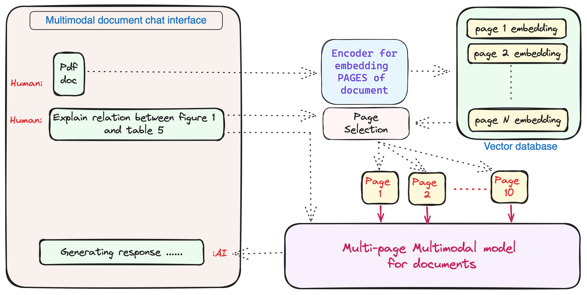
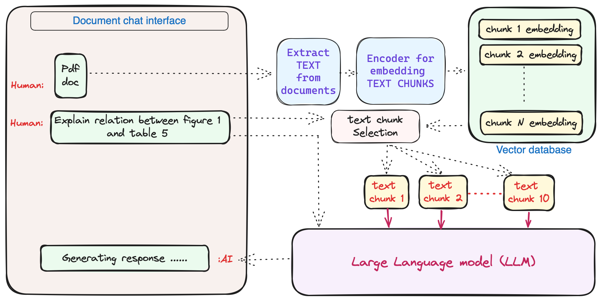

Multipage Multimodal Transformer and RAG sytem for PDF understanding
Shakti Wadekar
This project builds a RAG system using Multipage Multimodal Transformer for chatting with you PDFs
This project builds a RAG system using Multipage Multimodal Transformer for chatting with you PDFs

